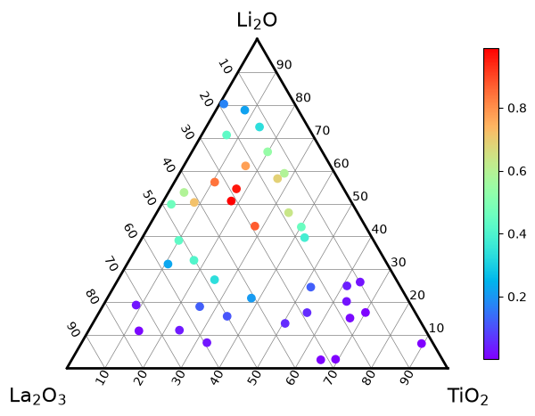
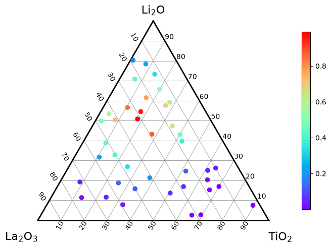
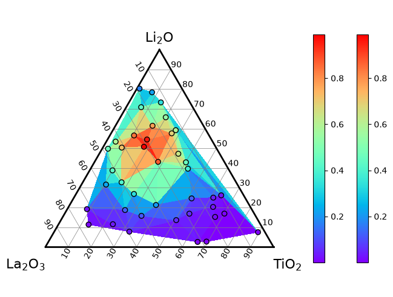
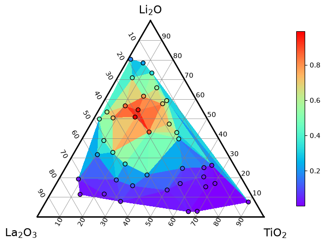
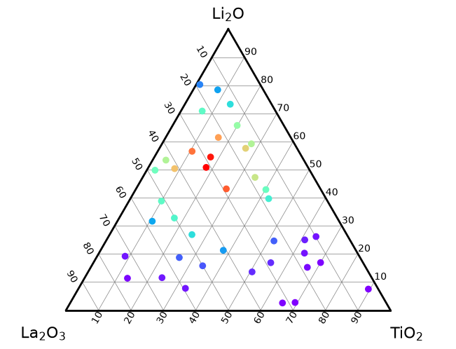
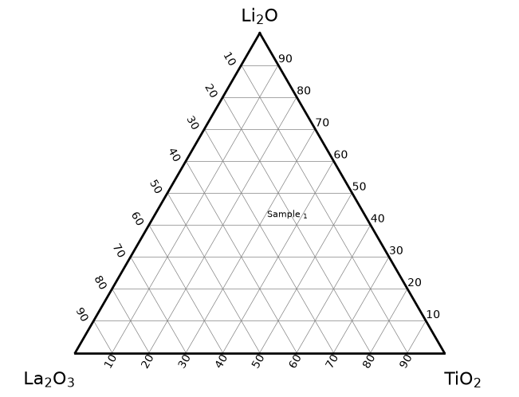
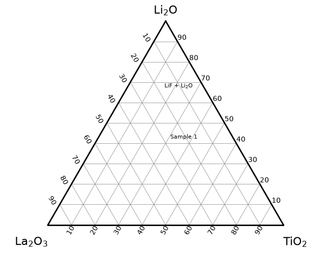
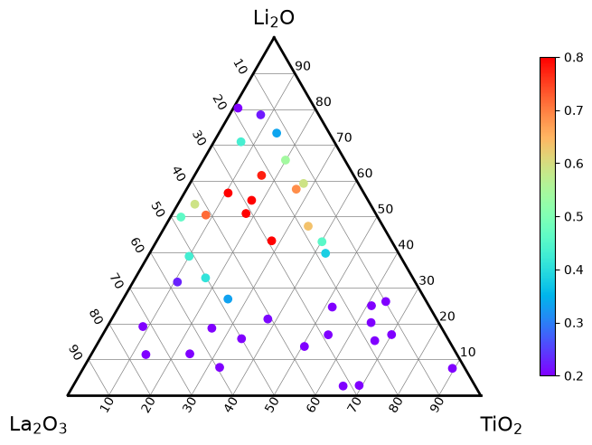
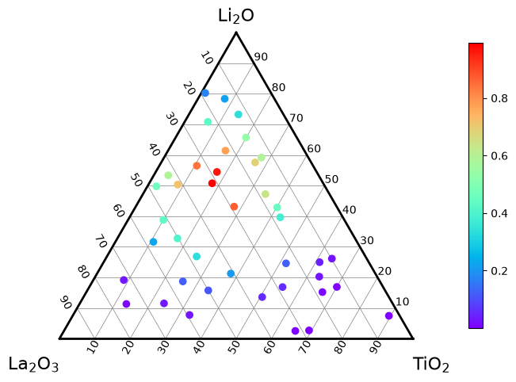

Migrating to v4.0.0#
ternary-diagram 4.0.0 will change some defaults, make the options of the older methods keyword-only, change how the aspect of the Axes is kept, and remove a deprecated argument.
This page lists each change, the FutureWarning that announces it in v3.x, the calls that emit it, and how to keep the current behavior or adopt the new one now.
Code that follows the advice in the warnings runs without warnings in v3.x and draws the same figure in v3.x and v4.0.0, except for the change of the aspect, which emits no warning and is described in its own section.
Each section shows the code that emits the warning in a static block, followed by the warning that the code emits when this page is built with the current version of ternary-diagram.
Expand “Show code cell source” above that output to see how the warning is caught: the code of the block runs unchanged between the Begin and End comments inside warnings.catch_warnings, and the caught warnings are printed, wrapped at spaces to fit the page.
The values on this page are made up for illustration. They come from a smooth function of the composition of Li2O, La2O3 and TiO2, evaluated at 40 random compositions, and are not measured properties of this system.
import matplotlib.pyplot as plt
import numpy as np
from ternary_diagram import TernaryDiagram
from ternary_diagram.utils import get_label
materials = ["Li2O", "La2O3", "TiO2"]
def property_value(a, b, c):
"""A made-up property between 0 and 1, highest near (0.5, 0.3, 0.2)."""
distance2 = (a - 0.5) ** 2 + (b - 0.3) ** 2 + (c - 0.2) ** 2
return np.exp(-distance2 / 0.08)
rng = np.random.default_rng(0)
compositions = rng.dirichlet([1.5, 1.5, 1.5], size=40)
values = property_value(*compositions.T)
Summary of changes#
The table compares v3.x and v4.0.0 for each change, and shows the code that keeps the v3.x behavior or adopts the v4.0.0 behavior.
For the changes of defaults, the v3.x and v4.0.0 columns describe the behavior when the argument named in the first column is not specified.
The code in the last two columns emits no FutureWarning and behaves the same in v3.x and v4.0.0.
The changelog lists these changes under “Deprecations”.
Change |
v3.x |
v4.0.0 |
Keep the v3.x behavior |
Adopt the v4.0.0 behavior |
|---|---|---|---|---|
Layout adjustment ( |
Calls |
Leaves the layout untouched, as with |
|
|
Colorbar on a diagram that already has one ( |
Adds another colorbar |
Adds none |
|
|
|
Deprecated name of |
Removed |
|
|
Formatting of annotations ( |
Writes every number as a subscript ( |
Follows |
The text formatted with |
|
Options passed by position ( |
Accepted, with a |
Raises a |
Not possible |
Pass the options by keyword, as in |
Kept by widening the data limits ( |
Kept by shrinking the box of the Axes to the triangle ( |
|
|
The warnings about the defaults are emitted at most once per diagram for each change, and only when the call would give a different result in v4.0.0.
The warning about flag_cbar is emitted by every call that passes it.
The warning about the options passed by position is emitted once per diagram for each method, and by every call of TernaryDiagram itself, which creates a new diagram.
The change of the aspect emits no warning.
Each warning points at the line of your code that made the call.
Since later calls on the same diagram do not warn again, fix every call of the same kind, not only the first one; Finding affected code shows how to find them all.
Layout warning#
A plotting call, such as scatter() or plot(), emits this warning when the diagram was created without tight_layout and its figure has no layout engine, for example a figure created by plt.subplots() without layout, or by TernaryDiagram(materials) without ax.
A figure with a layout engine, such as layout="constrained", and a subfigure are never adjusted and never warn.
Creating the diagram and the set_* methods do not adjust the layout either.
Code that emits the warning:
fig, ax = plt.subplots()
td = TernaryDiagram(materials, ax=ax)
points = td.scatter(compositions, z=values)
FutureWarning: TernaryDiagram called `Figure.tight_layout()` after plotting
because the figure has no layout engine and `tight_layout` was not specified.
In ternary-diagram 4.0.0, TernaryDiagram will no longer adjust the figure
layout by default (tight_layout=False). To keep the current behavior, pass
`tight_layout=True` to `TernaryDiagram`. To adopt the new behavior now, pass
`tight_layout=False` and call `fig.tight_layout()` yourself, or create the
figure with `layout="constrained"`.
To keep the current behavior, pass tight_layout=True to TernaryDiagram.
The figure margins are still fitted after each plotting call, without the warning:
fig, ax = plt.subplots()
td = TernaryDiagram(materials, ax=ax, tight_layout=True)
points = td.scatter(compositions, z=values)

To adopt the new behavior now, pass tight_layout=False and call fig.tight_layout() yourself, once after the last plotting call:
fig, ax = plt.subplots()
td = TernaryDiagram(materials, ax=ax, tight_layout=False)
points = td.scatter(compositions, z=values)
fig.tight_layout()
Or create the figure with a layout engine, which arranges the figure every time it is drawn; tight_layout does not need to be passed.
This is the way recommended in this user guide:
fig, ax = plt.subplots(layout="constrained")
td = TernaryDiagram(materials, ax=ax)
points = td.scatter(compositions, z=values)

Layout and colorbars explains the layout engines, multiple panels and subfigures.
Duplicate colorbar warning#
The plots colored by values, scatter() with z, contour(), tripcolor() and heatmapf(), emit this warning when they are called without colorbar on a diagram that already has a colorbar.
A diagram already has a colorbar when one was added through this TernaryDiagram, automatically or with colorbar(), and was not removed; see Automatic colorbars for the details.
The first plot colored by values on a diagram adds a colorbar in both versions and does not warn.
Code that emits the warning, at the second plot colored by values:
fig, ax = plt.subplots(layout="constrained")
td = TernaryDiagram(materials, ax=ax)
heatmap = td.tripcolor(compositions, values)
points = td.scatter(compositions, z=values, edgecolors="black")
FutureWarning: `scatter` added another colorbar to this diagram, which already
has one, because `colorbar` was not specified. In ternary-diagram 4.0.0, a
colorbar will be added automatically only when the diagram has none. To keep
the current behavior, pass `colorbar=True`. To adopt the new behavior now, pass
`colorbar=False`.
To keep the current behavior, pass colorbar=True to the second plot, which adds a second colorbar on purpose:
fig, ax = plt.subplots(layout="constrained")
td = TernaryDiagram(materials, ax=ax)
heatmap = td.tripcolor(compositions, values)
points = td.scatter(
compositions, z=values, edgecolors="black", colorbar=True
)

To adopt the new behavior now, pass colorbar=False, and the plots share the colorbar that is already there:
fig, ax = plt.subplots(layout="constrained")
td = TernaryDiagram(materials, ax=ax)
heatmap = td.tripcolor(compositions, values)
points = td.scatter(
compositions, z=values, edgecolors="black", colorbar=False
)

The plots here use the same values, so they have the same color range.
When plots with different values share a colorbar, give them the same z_min, z_max and cmap, as shown in Adding a colorbar yourself.
flag_cbar is renamed to colorbar#
The argument flag_cbar of scatter and contour is renamed to colorbar and will be removed in 4.0.0.
Every call that passes flag_cbar emits this warning, whatever its value.
Code that emits the warning:
fig, ax = plt.subplots(layout="constrained")
td = TernaryDiagram(materials, ax=ax)
points = td.scatter(compositions, z=values, flag_cbar=False)
FutureWarning: `flag_cbar` of `scatter` was renamed to `colorbar`. `flag_cbar`
will be removed in ternary-diagram 4.0.0. Pass `colorbar` instead.
Replace flag_cbar with colorbar and keep the value.
The code below works the same in v3.x and v4.0.0:
fig, ax = plt.subplots(layout="constrained")
td = TernaryDiagram(materials, ax=ax)
points = td.scatter(compositions, z=values, colorbar=False)

flag_cbar is read as true or false, but colorbar accepts only None, True and False and raises a TypeError for other values, so write flag_cbar=0 as colorbar=False and flag_cbar=1 as colorbar=True.
Passing both flag_cbar and colorbar raises a ValueError.
Code that passed flag_cbar by position, as the 6th argument of scatter or contour, now passes colorbar, and the same rule applies to it; there, None now means that colorbar is not specified, so a colorbar is added when z is given.
The new drawing methods do not accept flag_cbar.
tripcolor() and heatmapf() raise a TypeError that names colorbar instead:
fig, ax = plt.subplots(layout="constrained")
td = TernaryDiagram(materials, ax=ax)
try:
heatmap = td.heatmapf(property_value, flag_cbar=False)
except TypeError as error:
print(f"TypeError: {error}")
plt.close(fig) # heatmapf drew nothing, so the figure is not shown.
TypeError: `heatmapf` does not accept `flag_cbar`. Use `colorbar` instead.
fill() and text() never add a colorbar and have neither argument.
They pass their keyword arguments to matplotlib, which raises an AttributeError for flag_cbar as for any unknown property.
Annotation formatting warning#
annotate() and scatter with annotations emit this warning when they are called without auto_latex_notation and a text would be shown differently in v4.0.0.
In v3.x, they write every number in the text as a subscript; in v4.0.0, they will follow auto_latex_notation of TernaryDiagram, as text() does, and format only the words that look like chemical formulas.
So the warning is emitted for a text with numbers that are not part of a chemical formula, such as "Sample 1", for formulas joined without spaces, such as "Li2O-La2O3", and for a chemical formula with numbers, such as "Li2O", on a diagram created with auto_latex_notation=False.
A text that contains $ (mathtext) is shown as it is, without the warning.
The warning names only the first text that changes on each diagram, so check the other texts too.
Code that emits the warning:
fig, ax = plt.subplots(layout="constrained")
td = TernaryDiagram(materials, ax=ax)
note = td.annotate("Sample 1", [0.4, 0.3, 0.3])
FutureWarning: `annotate` formatted 'Sample 1' as 'Sample $_{1}$', writing
every number as a subscript. In ternary-diagram 4.0.0, only the words that look
like chemical formulas are formatted, and only when `auto_latex_notation` of
`TernaryDiagram` is True, so it will be shown as 'Sample 1'. To keep the
current behavior, pass the text formatted with
`ternary_diagram.utils.get_label` together with `auto_latex_notation=False`. To
adopt the new behavior now, pass `auto_latex_notation=True` to format the
chemical formulas or `auto_latex_notation=False` to show the text as it is.
To keep the current behavior, format the text with get_label(), which writes every number as a subscript, and pass auto_latex_notation=False so that it is shown as it is:
fig, ax = plt.subplots(layout="constrained")
td = TernaryDiagram(materials, ax=ax)
note = td.annotate(
get_label("Sample 1"), [0.4, 0.3, 0.3], auto_latex_notation=False
)

To adopt the new behavior now, pass auto_latex_notation=True to format only the chemical formulas, or auto_latex_notation=False to show the text as it is.
With True, "Sample 1" is shown as it is and the 2 of "LiF + Li2O" is a subscript:
fig, ax = plt.subplots(layout="constrained")
td = TernaryDiagram(materials, ax=ax)
note = td.annotate("Sample 1", [0.4, 0.3, 0.3], auto_latex_notation=True)
formula = td.annotate(
"LiF + Li2O", [0.65, 0.2, 0.15], auto_latex_notation=True
)

For scatter, the same applies to the texts given by annotations: pass [get_label(text) for text in texts] with auto_latex_notation=False to keep the current behavior, or pass auto_latex_notation=True or False to adopt the new one.
Chemical formula labels in Getting started explains which words count as chemical formulas.
Options passed by position#
In 4.0.0, the methods that existed before 3.3.0 will accept only their data by position, like the newer methods such as tripcolor() and heatmapf() already do.
The options after the data will be keyword-only:
Method |
Stays positional |
Becomes keyword-only |
|---|---|---|
|
|
|
|
|
|
|
|
|
|
|
Since 3.4.0, passing any of them by position emits this warning, which names the options passed by position; their values keep their meaning.
Passing them by position will raise a TypeError in 4.0.0.
Code that emits the warning, once for TernaryDiagram and once for scatter:
fig, ax = plt.subplots(layout="constrained")
td = TernaryDiagram(materials, ax)
points = td.scatter(compositions, values, 0.2, 0.8)
FutureWarning: Passing `ax` of `TernaryDiagram` by position is deprecated. In
ternary-diagram 4.0.0, it will be keyword-only. Pass it by keyword instead, as
in `TernaryDiagram(..., ax=...)`.
FutureWarning: Passing `z_min` and `z_max` of `scatter` by position is
deprecated. In ternary-diagram 4.0.0, they will be keyword-only. Pass them by
keyword instead, as in `scatter(..., z_min=..., z_max=...)`.
Pass the options by keyword. The code below draws the same figure in v3.x and v4.0.0:
fig, ax = plt.subplots(layout="constrained")
td = TernaryDiagram(materials, ax=ax)
points = td.scatter(compositions, values, z_min=0.2, z_max=0.8)

Aspect of the Axes#
TernaryDiagram keeps the aspect of its Axes equal, so that the triangle is equilateral.
In v3.x, it does so by widening the data limits (adjustable="datalim"): the Axes keeps the space given to it, and the triangle is drawn in the middle of it.
In 4.0.0, it will shrink the box of the Axes to the triangle instead (adjustable="box").
With a layout engine and a colorbar, the vertex labels then stay inside the figure, which matplotlib 3.11 can clip now.
This change emits no warning, but it changes how some figures look:
A legend placed with
locis placed in the box of the Axes, so it can move closer to the triangle.On a figure with a layout engine, a colorbar added automatically can become shorter; with
layout="compressed", it can shrink to about the height of the triangle. Without a layout engine, its length does not change.
To see how your figures will look in 4.0.0, change the setting after creating the diagram:
fig, ax = plt.subplots(layout="constrained")
td = TernaryDiagram(materials, ax=ax)
td.ax.set_aspect("equal", adjustable="box")
points = td.scatter(compositions, z=values)

The diagram never changes this setting after its creation, so the plotting calls and the set_* methods keep it.
In 4.0.0, call td.ax.set_aspect("equal", adjustable="datalim") in the same place to keep the v3.x look.
Finding affected code#
Since the warnings about the defaults and about the options passed by position are emitted only once per diagram, and Python shows a warning from the same line of code only once by default, the warnings that you see may not show every call that needs a change.
Turn FutureWarning into an error, so that the first affected call stops the run with a traceback that points at it, fix that call, and run again until no error is raised.
To run a script:
python -W error::FutureWarning your_script.py
To run a test suite with pytest:
pytest -W error::FutureWarning
In a notebook, run this at the top, before the cells that draw:
import warnings
warnings.simplefilter("error", FutureWarning)
These settings also turn the FutureWarning of other libraries into errors, which shows what else your code needs to update.
The change of the aspect of the Axes emits no warning, so look at the figures that have a legend, or a colorbar on a figure with a layout engine, to check them.
See also#
The changelog lists all the changes of each version.
Layout and colorbars explains the automatic layout and the automatic colorbars, and how to control them.